Me interesa profundamente la comunicación visual. También capturar en fotos la vida ordinaria y contar historias breves con mis dibujos.
Diseño gráfico
Me gusta diseñar para la gente. Soy artífice de piezas lindas para impresión y web.
Photografía
Me gusta fotografiar gente, especialmente familias y niños. Mi objetivo es simple: preservar recuerdos inestimables.
Ilustración
Me gusta dibujar gente. Sobre todo me inspiro esbozando pasajeros que comparten un corto trayecto conmigo sin percatarse.
Lo que hago
Trabajo como artista gráfica en Montreal desde 2008.
Imagen de marca : Norda Stelo
Diseño gráfico
Sitio web de Roche
Diseño web / UI
Informes anuales de Roche
Diseño gráfico
Niños y familia
Fotografía
Retratos y estaciones
Fotografía
La vida cotidiana
Fotografía
Caricaturas para Golf Canada
Ilustración
Personajes para OneBigPlanet
Ilustración
Dibujos de gente
Ilustración
Quién soy
Soy una diseñadora gráfica que ama tomar fotos y dibujar.
La "garabateadora"
Siempre me ha gustado dibujar. Cuando era muy pequeña mi soporte favorito era el piso inmaculado que mis hermanas mayores acaban de limpiar.
La "geek"
Estudié arte y diseño gráfico. Lo que significa muchas noches sin dormir y un consumo poco saludable de cafeína.
La profesora
Durante 7 años contribuí en la formation de jóvenes y talentuosos artistas. Hoy, viendo las cosas en perspectiva, sé que aprendí más de ellos que ellos de mí.
La "mamarazzi"
Mi permiso de maternidad fue mi escuela de fotografía. Mi tema principal fue mi muchachito.
La diseñadora
Trabajo en una firma de ingenieros. Es realmente gracioso escuchar sus impresiones sobre mi oficio.
Cómo lo hago
Este es mi proceso. Sea diseño gráfico, fotografía o ilustración, las etapas a seguir son esencialmente las mismas.
Inmersión
Definición de objectivos, recolección de informationes y abocetado.
Creación
Cuando dibujo, hago la sesión de fotos o diseño.
Entrega
Presentación del producto y evaluación de los resultados.
Tengo la fortuna de encontrarme entre quienes aman profundamente su oficio, por eso me propongo a ir siempre un poco más allá. Me implico enteramente en los proyectos que me confían y me aseguro de que mis clientes tengan una muy grata experiencia.
¡Hola!
Si puedes, toma unos minutos para saludarme o preguntarme algo. ¡Me encantará saber de ti!
Identidad visual de Norda Stelo
En 2015, después de 50 años en la industria, Roche ltée Groupe-conseil se convirtió en Norda Stelo Inc. Nosotros le dimos un nuevo rostro.
Mi grano de arena
Estuve a cargo de la papelería, las ilustraciones y del estilo de las publicaciones impresas, los anuncios publicitarios, los medios sociales y el los gráficos para web. Para ello, participé en un equipo de profesionales compuesto por otra diseñadora gráfica, una consejera en comunicación, un responsable de proyecto y la directora del Departamento de comunicaciones y mercadeo.
Las líneas directrices
Dado que la paleta de colores es de dos tonos, nuestra premisa inicial fue la de reservar el azul para las publicaciones corporativas y el naranja para la comercialización. Le dimos prioridad al empleo de líneas rectas y estructuras para aludir a la manera lógica de pensar de los ingenieros.
El enfoque
Cada composición es una iteración del logo, cuyas líneas diagonales determinan la ubicación de las imágenes. Se evitó el uso de degradados y elementos curvos y nos servimos principalmente de colores planos, transparencias, fotografías e ilustraciones geométricas. Estas últimas parten de una representación del cielo estrellado, puesto que "Norda Stelo" significa estrella polar en esperanto.
El resultado
La introducción de la nueva imagen se ve reforzada por la simplicidad del concepto y el uso del color. Uno de nuestros mayores logros fue el cambio más pequeño: la sustitución de las fotografías de proyecto pour una ilustración especialmente concebida para las cubiertas de las licitaciones. De esta manera se consolidoó una mayor coherencia entre las piezas y se optimizó el tiempo invertido en las tareas cotidianas.
Papelería
Corporativo
Mercadeo
Fecha: octubre 2015 / febrero 2016
Cliente: Norda Stelo Inc.
Categoría: diseño gráfico
Sitio web de Roche
En 2014, el incremento de visitas provenientes de dispositivos mobiles nos animó a desarrollar un sitio web adaptativo.
Mi grano de arena
Este fue un gran proyecto realizado rápidamente por un equipo reducido: una consejera en comunicaciones, una redactora, un integrador y yo como diseñadora gráfica. Aunque mi rol principal fue el diseño de la interfaz de usuario (UI), también colaboré como en la concepción de la experiencia del usuario (UX).
Las líneas directrices
El objetivo principal fue la actualización del contenido y de la apariencia del sitio haciéndolo accesible desde dispositivos móbiles. Fue dirigido particularmente a los clientes y empleados potenciales.
El enfoque
La página de inicio es una ventana al sitio completo. El énfasis fue puesto en los proyectos realizados por la compañía. Las secciones principales se presentan en módulos para adaptarse fácilmente a las pantallas maás pequenñas (320px).
El resultado
Tal y como se esperaba, el referenciamiento del sitio web mejoró desde el lanzamiento de la versión adaptativa. El sitio ha sido desde entonces completamente legible sin importar el tamaño del dispositivo de lectura. Los empleados y clientes nos hicieron partícipes de sus comentarios acerca de su experiencia de navegación y la apariencia general.
Página de inicio
Páginas secundarias
Wireframes y prototipos
Para ver el prototipo a partir de Invision haz clic aquí. Para ver la nueva versión con la imagen de Norda Stelo (en curso), haz clic aquí.
Fecha: noviembre 2014 / mayo 2015
Cliente: Roche ltée, Groupe-conseil
Categoría: diseño web / UI
Informes anuales de Roche
En 2013, el año del 50o aniversario de Roche, el informe anual fue entregado por primera vez en formato digital a partir de un iPad. Desde entonces, solamente unas pocas versiones impresas han sido producidas.
Mi grano de arena
De acuerdo al eslogan creado por la directora del departamento, desarrollé el concepto gráfico de cada informe. Inspirée par la ligne directrice donnée par la responsable du département des communications et marketing, j’ai développé le concept visuel de chaque rapport. J’ai aussi été la responsable de la mise en page française et anglaise, des illustrations et des graphiques.
Las líneas directrices
Los textos principales debían ser legibles sin recurrir al agrandamiento de zonas de la pantalla. Cada documento debería ser un PDF de acceso restringido, protegido por contraseña y personalizado con el nombre del usuario.
Enfoque y resultado por año
Dada la naturaleza confidencial de estas publicaciones, ciertas secciones del contenido han sido modificadas.
2012 - 2013 — Imagine los próximos 50...
Aprovechando el tema festivo de aniversario, retomé los murales que hice para la nueva sede principal de Roche y así ilustrar el informe anual y los gráficos utilizados para la asamblea de accionarios.
Los dibujos fueron trazados a mano con lápiz y tinta, luego los trabajé digitalmente en Photoshop. Este toque manual balanceó la incorporación del nuevo formato digital. Con esto se buscó reforzar un hito en la historia de la compañía: medio siglo en el mercado.
2013 - 2014 — Construir un mañana juntos
Visualemente, el enfoque consistió este año en resaltar el aspecto humano de la compañía. El uso de la tipografía y el color fue más sólido, complementado con la incorporación de fotografías de los empleados y los proyectos recientes realizados por Roche.
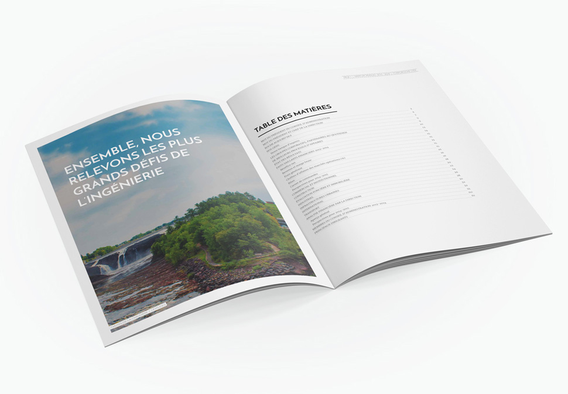
2014 - 2015 — Mantenerse a flote
En el curso de los últimos años, el mercado de la ingeniería no solamente se hizo más complejo, sino que además se tuvo que afrontar una serie de dificultades mayores. Por ello el mensaje global del informe anual de este período aludioó a la capacidad de superar las dificultades y emprender nuevos desafíos.
Todas las ilustraciones y la gama cromática están basadas en un tema náutico.
Fecha: 2013 / 2015
Cliente: Roche ltée, Groupe-conseil
Categoría: diseño gráfico
Chicos y familias
Los retratos que más me gustan son los que parecen transportarnos a la cotidianidad de las personas sin que ellas se percaten de nuestra presencia.
Mi grano de arena
Me gusta ser el instrumento para que la gente cuente su historia.
Las líneas directrices
En espacios cerrados, me gusta capturar los pequeños detalles que tendemos a olvidar con el tiempo: memorias entrañables como el juguete preferido de un niño o el gato que dormita bajo un rayo de luz que se cuela por la ventana. Afuera, me detengo más en la belleza de las cosas esenciales, como los sentimientos.
El enfoque
Siempre aprovecho la luz natural. Me gusta resaltar escenas íntimas con colores ligeramente sobre saturados.
El resultado
Estas son algunas historias breves de gente linda que me dejó entrar en su intimidad con mi Nikon.
Familias
Embarazadas
Recién nacidos
Bebés y niños pequeños
Niños
Fecha: 2012 / 2016
Cliente: gente
Categoría: fotografía
Estaciones y retratos
De la misma forma que la luz cambia con el paso de las estaciones, la mirada de la gente se transforma.
Mi grano de arena
Yo soy esa que dice detrás de la Nikon: "sí, tú eres fotogénico".
Las líneas directrices
Aunque me gusta enterarme de las expextativas de las personas acerca de sus retratos, me hace siempre feliz descubrirlas poco a poco mientras hago algunas tomas.
El enfoque
Si bien uno tiene la tendencia a vestirse mejor que de costumbre para una sesión de fotos y que el resultado puede ser ciertamente agradable, confieso que me conmueven más las capturas que nos muestran sin pretenciones en nuestra vida ordinaria.
El resultado
Un retrato primaveral debe hacerse en exteriores, porque no vale la pena mantenerse encerrado después de un largo invierno. En verano pasa algo parecido, sólo que la dosis de alegría es más evidente. El otoño es la estación ideal para la fotografía con luz natural, porque esta es mágica, dorada y dulce. El invierno puede ser nostágico o juguetón, dependiendo del lugar y de actitud de quienes estén delante del lente.
Primavera
Verano
Otoño
Invierno
Fecha: 2012 / 2016
Cliente: gente linda
Categoría: fotografía
La vida cotidiana
Una representación de pequeñas cosas que sin la fotografía podrían pasar desapercibidas.
Mi grano de arena
Estas son algunas de mis historias personales
Las líneas directrices
Preservar recuerdos de nuestra vida de todos los días.
El enfoque
Tres imágenes, una historia.
El resultado
Cinco historias cortas contadas de un plano general a un pequeño detalle.
Otoño en el campo
La primera vez experimenté el otoño en la ciudad, no creía lo que veían mis ojos. Tiempo después cuando pude disfrutarlo en el campo, me percaté de que no había visto aún toda su belleza. Esta primera captura fue hecha desde el auto, en marcha.
Un día de 30 grados en marzo
Algo muy extraño ocurrió con el clima en marzo de 2012: tuvimos un adelanto de verano por casi una semana. Normalmente durante este período, la ciudad entera esta cubierta de nieve y cuando nieva, caen copos grandes y esponjosos. También habría sido una época muy fría, pero no ese día. Así que nos fuimos de picnic al parque y pasamos la tarde con los pies descalzos.
Festival de tulipanes de Ottawa
Un corto viaje para aprovechar una de las paletas de color más hermosas de la primavera canadiense.
Caminatas vespertinas
Cuando vivíamos cerca del centro y que los días eran largos, Sam y yo nos paseábamos por los alrededores antes de la puesta del Sol. Entonces me enamoré de la arquitectura victoriana de Montreal.
¡Abuelita está aquí!
Una linda dama venezolana de 85 años, atravesoó solita el continente para pasar el verano con nosotros. Estas son algunas instantáneas de cuando mi muchachito la llevó a conocer su lugar favorito: Exporail, el museo ferroviario canadiense.
Fecha: 2012 / 2016
Cliente: yo misma
Categoría: fotografía
Caricaturas pour Golf Canada
Entre 2009 y 2012, hice algunas ilustraciones para Golf Canada Magazine.
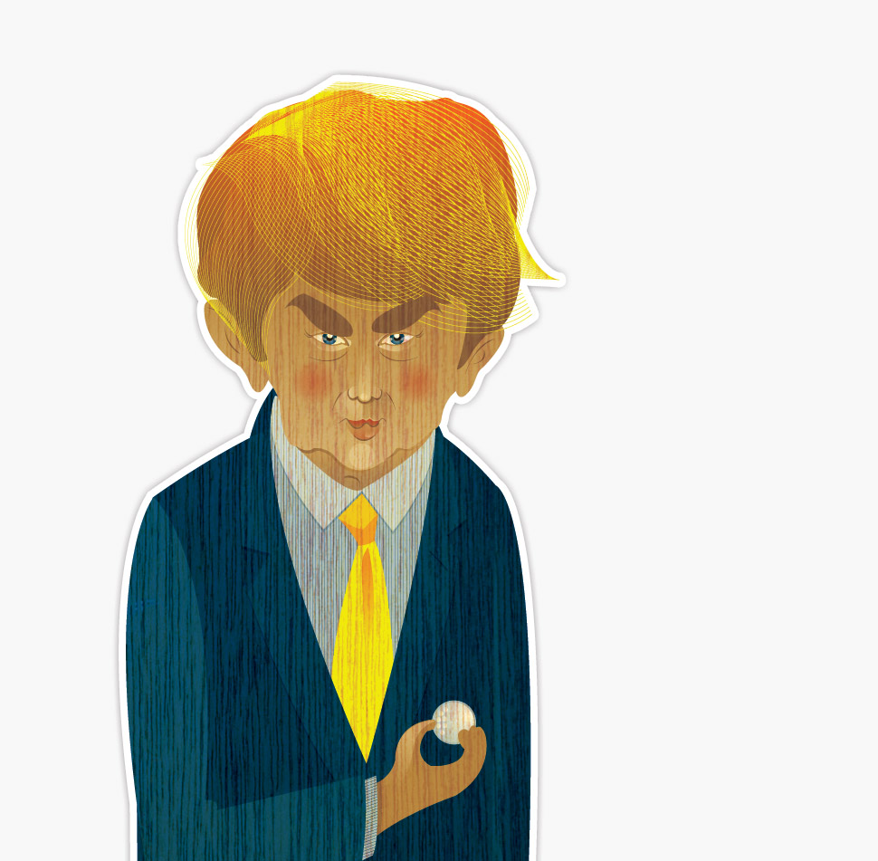
Mi grano de arena
A partir de las indicaciones del director artístico, crée las ilustraciones.
Las líneas directrices
Las ilustraciones debían ser humorísticas y sencillas. La paleta de colores a utilisar era la misma de la revista.
El enfoque
Todas las caricaturas debían destacar un aspecto de la historia a fin de despertar la curiosidad del lector. Todas fueron dibujadas a mano y trabajadas en Illustrator y Photoshop.
El resultado
Imagining Tiger Woods, The Musical...
If Shrek and Spiderman can swing a Broadway show then why not the PGA Tour's real-life fairy tale, the master of them all, Eldrick "Tiger" Woods?
— Maike Dojc. Golf Canada. April 2009. P. 54.
Pro-Am Matchmaker
His hip sashaying country woman with the truth telling hips has also received tons of camera love. This Colombian duo will get along as famously as arroz con coco.
— Maike Dojc. Golf Canada. June 2009. P. 78.
Le Golf et ses mystères
Soudainement, la tension a monté d’un cran. Je me suis imaginé non dans la peau de Jack Nicklaus, mais celle de Mickey Mantle. Première erreur.
— Serge Touchette. Golf Canada. June 2009. P. 90.
Au confessionnal
Oui, j’ai déjà triché. Une fois, peut-être même deux. Un léger coup de pied a suffi à déloger ma balle, qui était immobilisée au pied d’un sapin majestueux.
— Serge Touchette. Golf Canada. July 2009. P. 66.
School Daze 108 holes to glory
To David Hearn, the PGA Tour Qualifying Tournament is simply a job interview.
— Kevin Woodley. Golf Canada. September 2009. P. 36.
It took Canadian icon Mike Weir six years to make it through PGA Tour Q School.
— Kevin Woodley. Golf Canada. September 2009. P. 36.
Silences et fous rires...
Au 16e trou, Austin, un pied dans l’étang, l’autre en bordure du terrain, s’élance, puis tombe à pleine face dans l’eau sous le regard amusé des spectateurs et probablement des canards...
— Serge Touchette. Golf Canada. September 2009. P. 68.
La prière du golfeur...
Son plus gros défaut : il sacrait. Dans le bonheur ou dans le malheur, un juron n’attendait pas l’autre. En l’espace de quelques secondes, il pouvait écorcher les oreilles les plus coriaces.
— Serge Touchette. Golf Canada. June 2009. P. 60-61.
Si mon golf vous était conté...
Dans votre entourage, il se trouve sûrement un conteur invétéré, le genre de bonhomme qui se fait un devoir de vous narrer par le menu sa dernière partie de golf. Trou par trou? Non, pire encore. Coup par coup.
— Serge Touchette. Golf Canada. September 2010. P. 57.
In Training
I finally decided to enlist the help of some of the myriad training ads I've so often seen advertised on The Golf Channel, in golf magazines, and in those dreams I have where I invent cool stuff and as a result make scads of money.
— I.J. Shecter. Golf Canada. June 2011. P. 56-57.
Algunos bocetos
Fecha: 2009 / 2011
Cliente: Golf Canada Magazine
Categoría: ilustración
Personajes para OneBigPlanet
En 2009, OneBigPlanet Corp. me encargoó algunos avatares basados en su logo, una carita feliz. Estos serían utilizados para su plataforma de fidelisación y comercio electrónico.
Mi grano de arena
Creé los personajes basándome en las indicaciones del diseñador gráfico.
Las líneas directrices
El líder de la compañía queriía agregar un toque humano al portal, por ello solicitoó unos 15 personajes inspirados en su logo para representar a los usuarios del portal.
El enfoque
Los personajes son modulares para permitir a los usuarios combinar su vestuario, cabello y accesorios a gusto.
El resultado
19 personajes fueron desarrollados para representar los perfiles de usuario del portal.
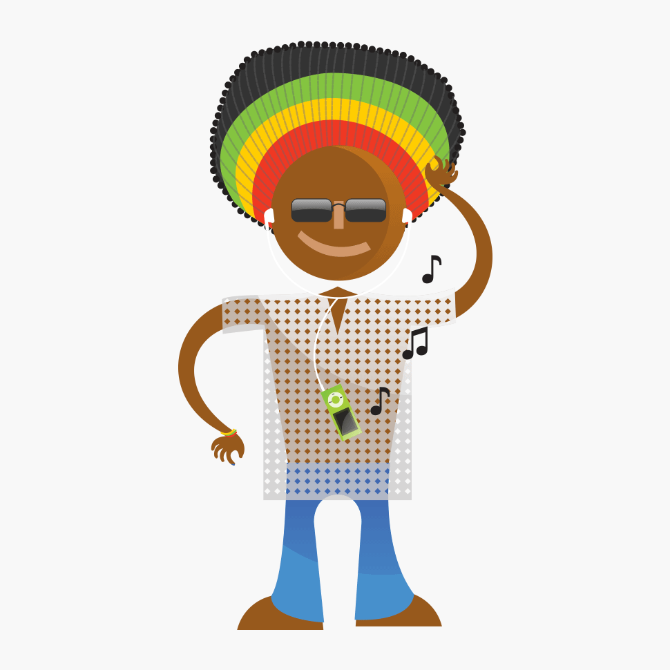
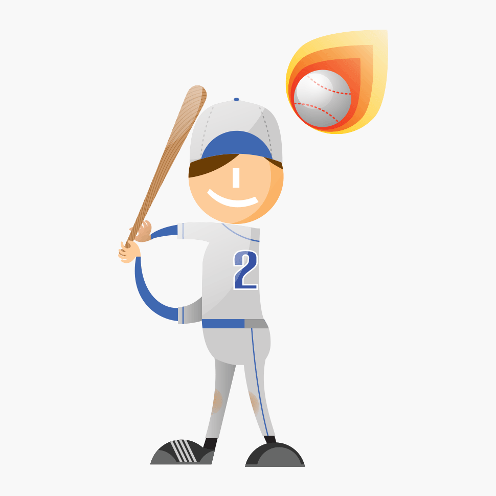
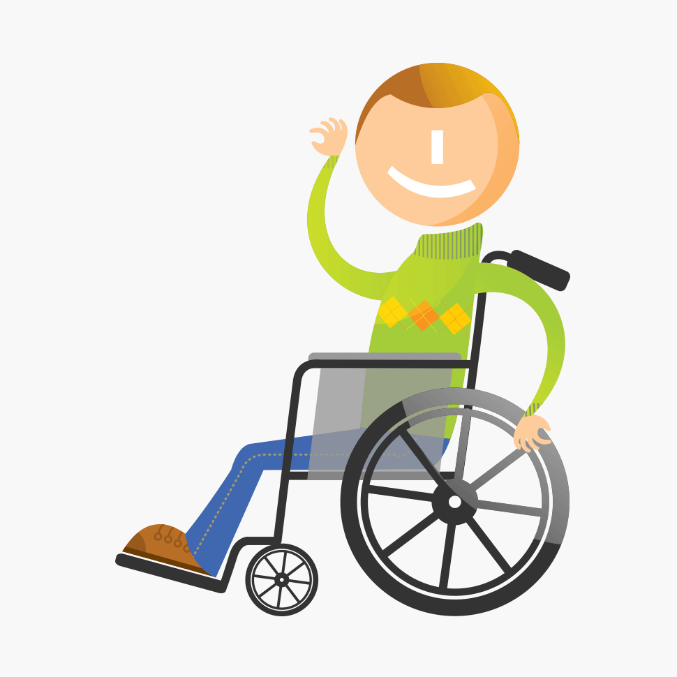
Fecha: 2008
Cliente: OneBigPlanet Corp.
Categoría: ilustración
Dibujos de gente
Estas son algunas de las ilustraciones que hice en 2000 para mi tesis de grado en diseño gráfico, se trataba de un banco de imágenes sobre la gente de Maracaibo. También hay algunos dibujos que hice en Montreal mientras viajaba en bus, en metro o en tren.
Mi grano de arena
Dibujo personas por la misma razón que las capturo en fotos: es mi tema preferido.
Las líneas directrices
Para mi proyecto de tesis, me basé en fotografiías tomadas por amigos, familiares y propias. Las otras fueron hechas no muy lejos de un modelo despistado que atraía mi atención en el camino.
El enfoque
Todos los dibujos fueron hechos a mano con lápices de grafito y de colores. La representación trata de ser realista pero inacabada, como un simple ejercicio de dibujo.
El resultado
Hay un no sé qué poético en dibujar desconocidos, especialmente cuando ellos no se percatan de la atención que han despertado inadvertidamente.


 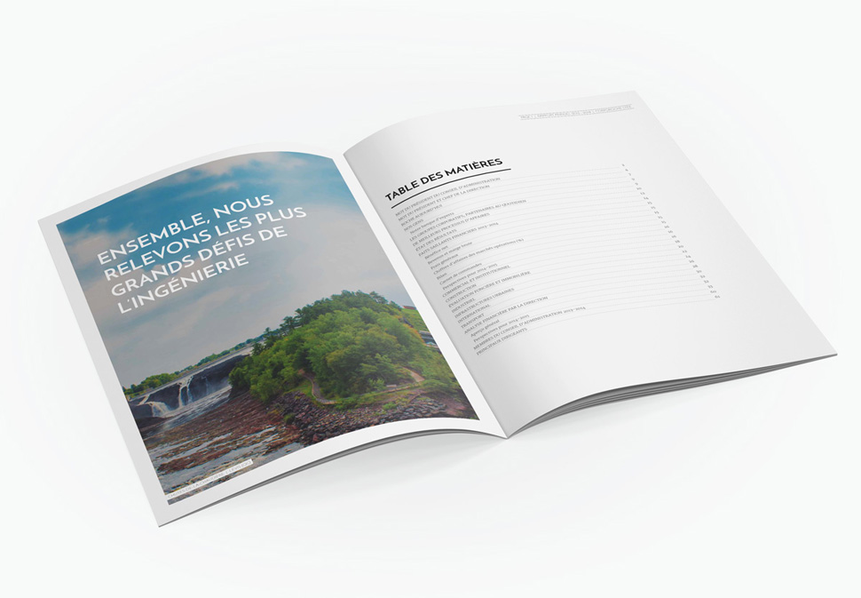
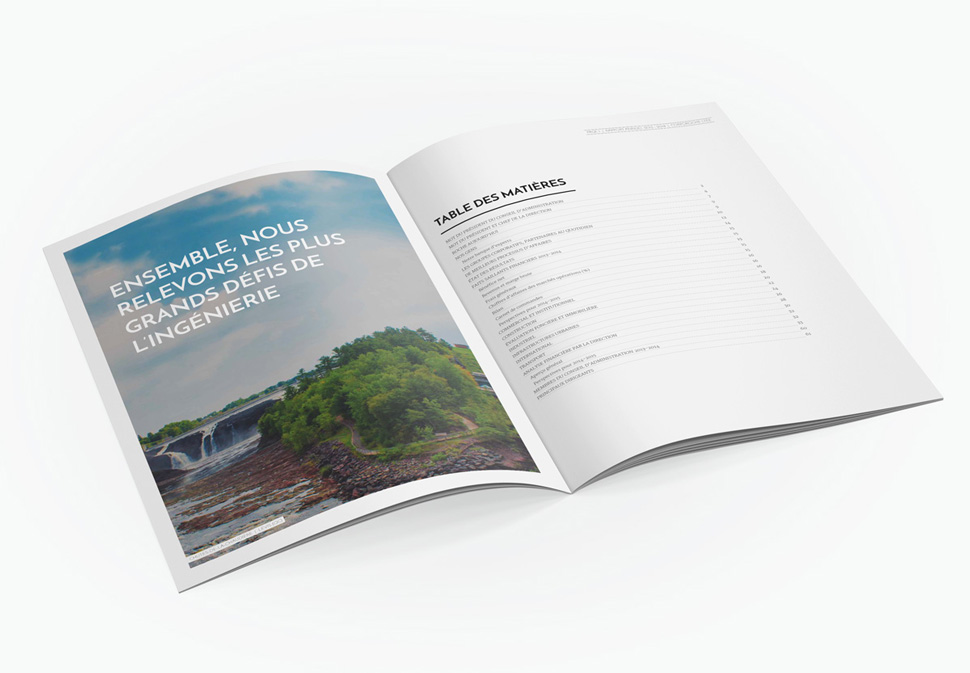


 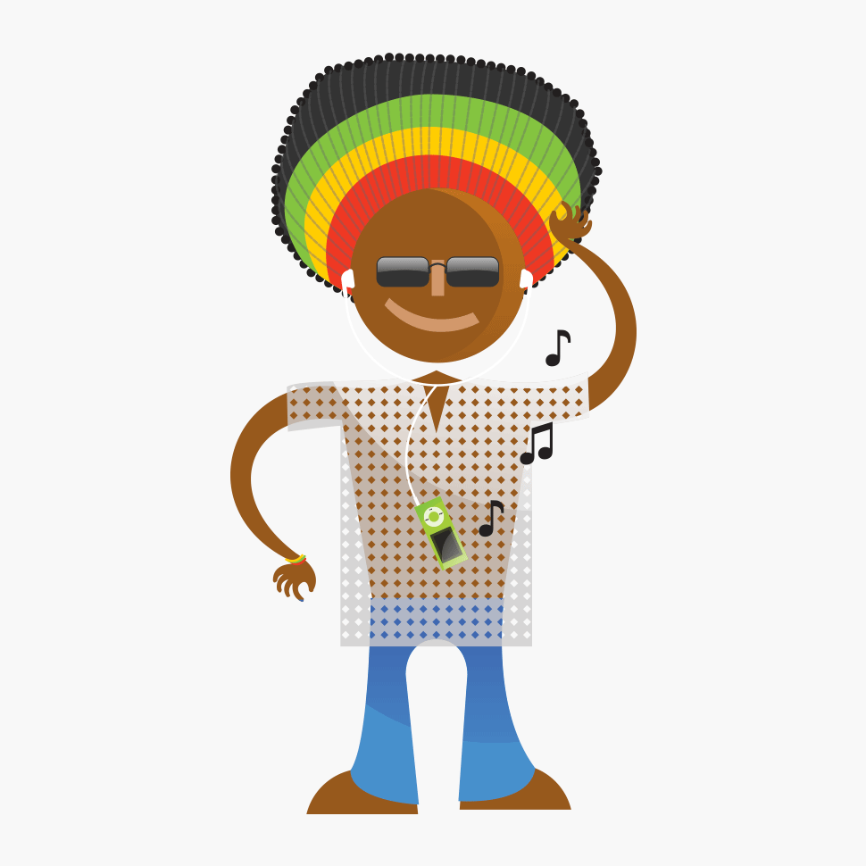
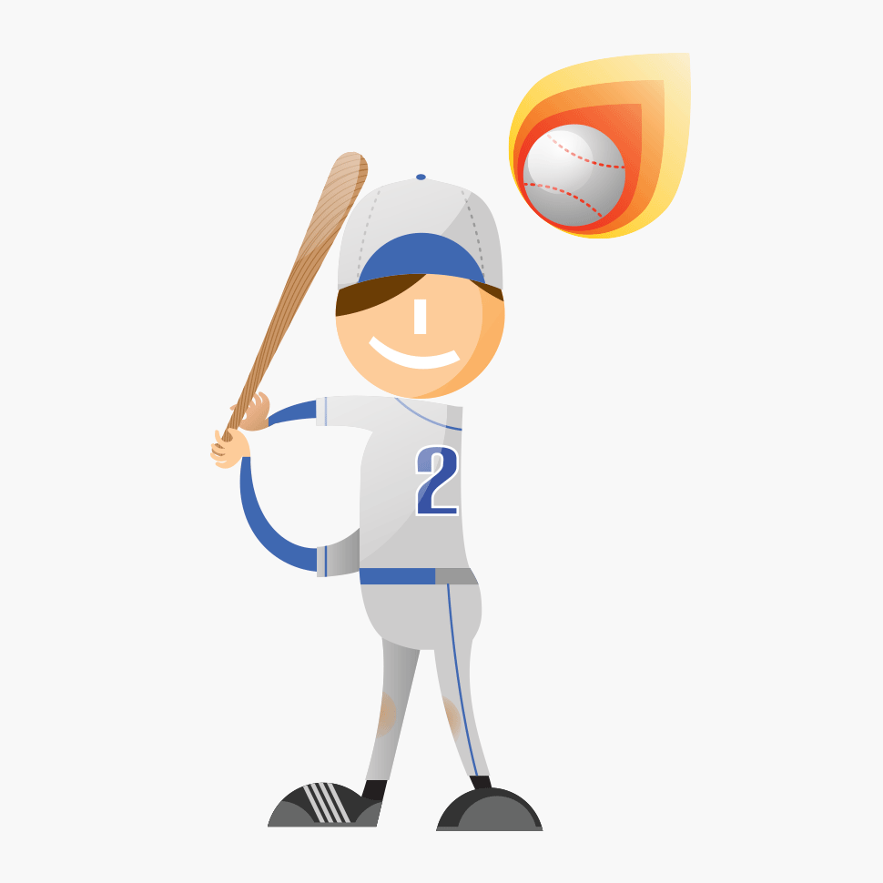
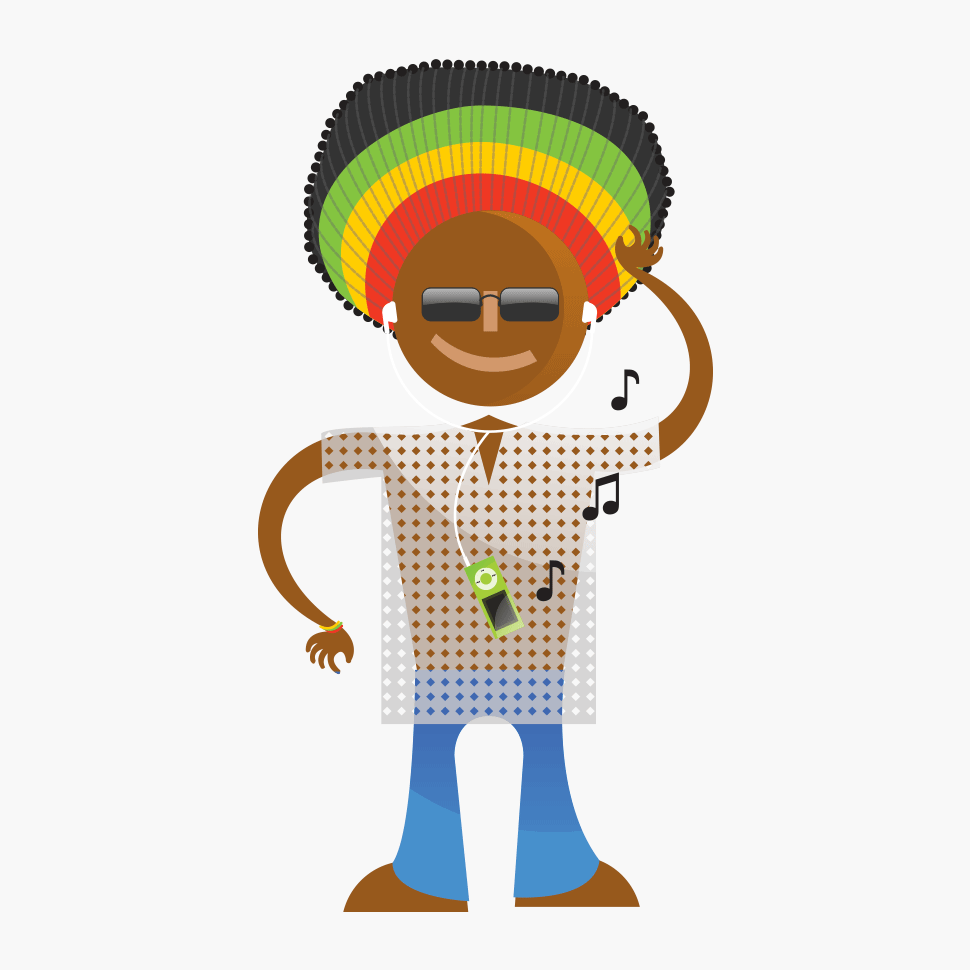
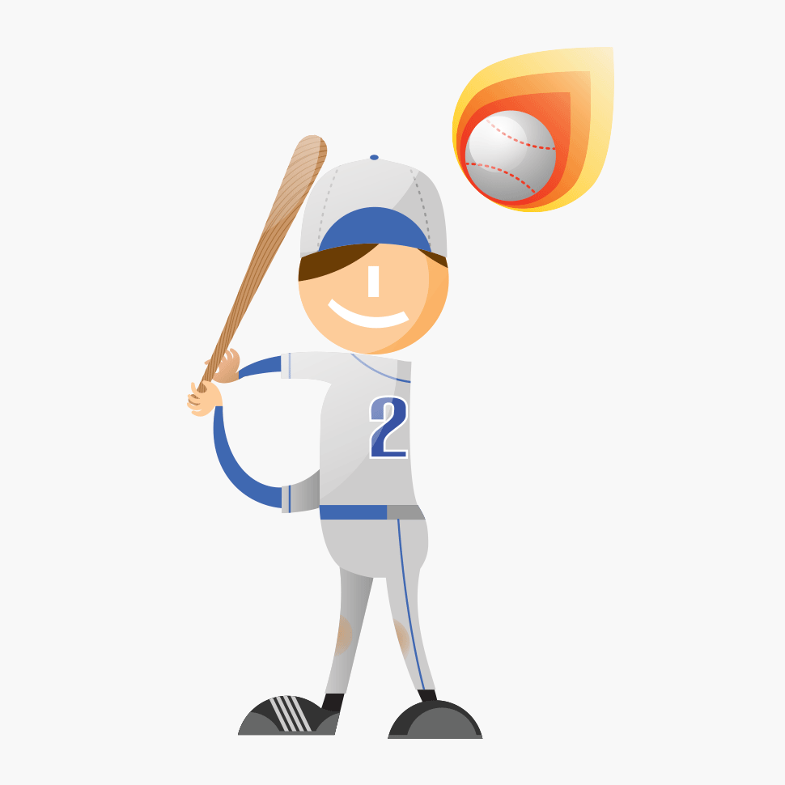


 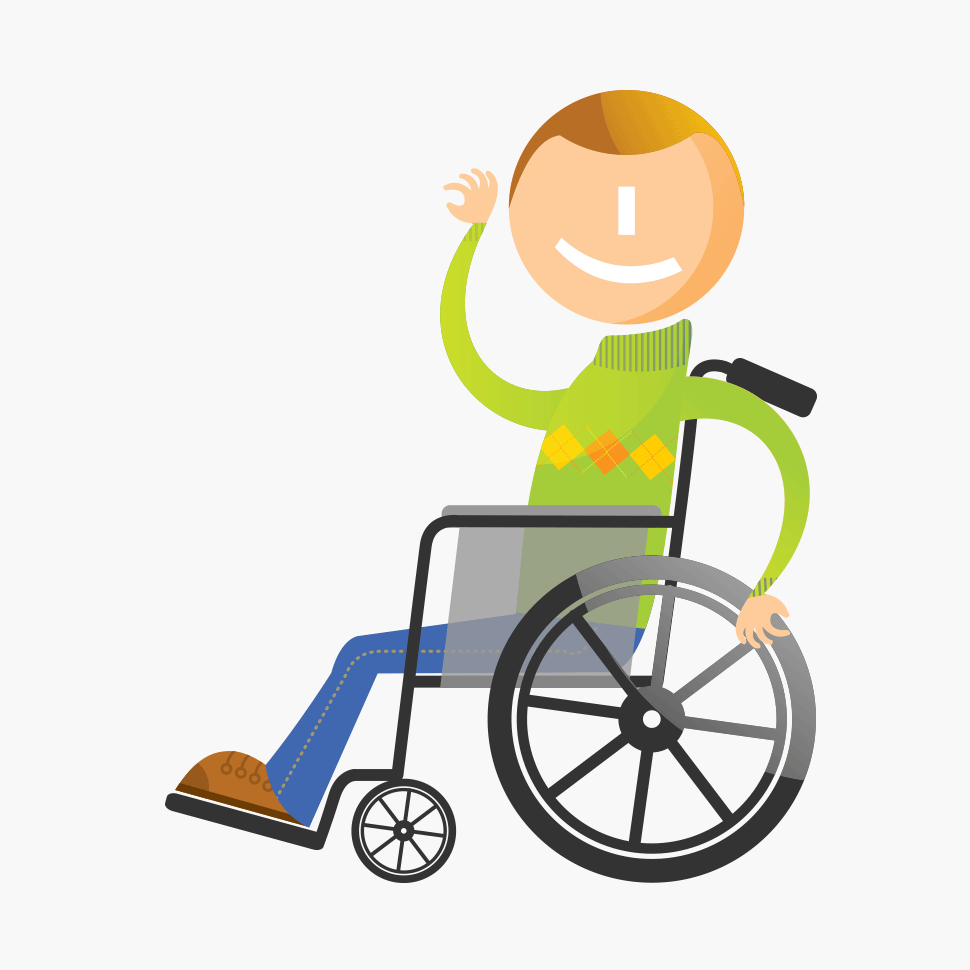
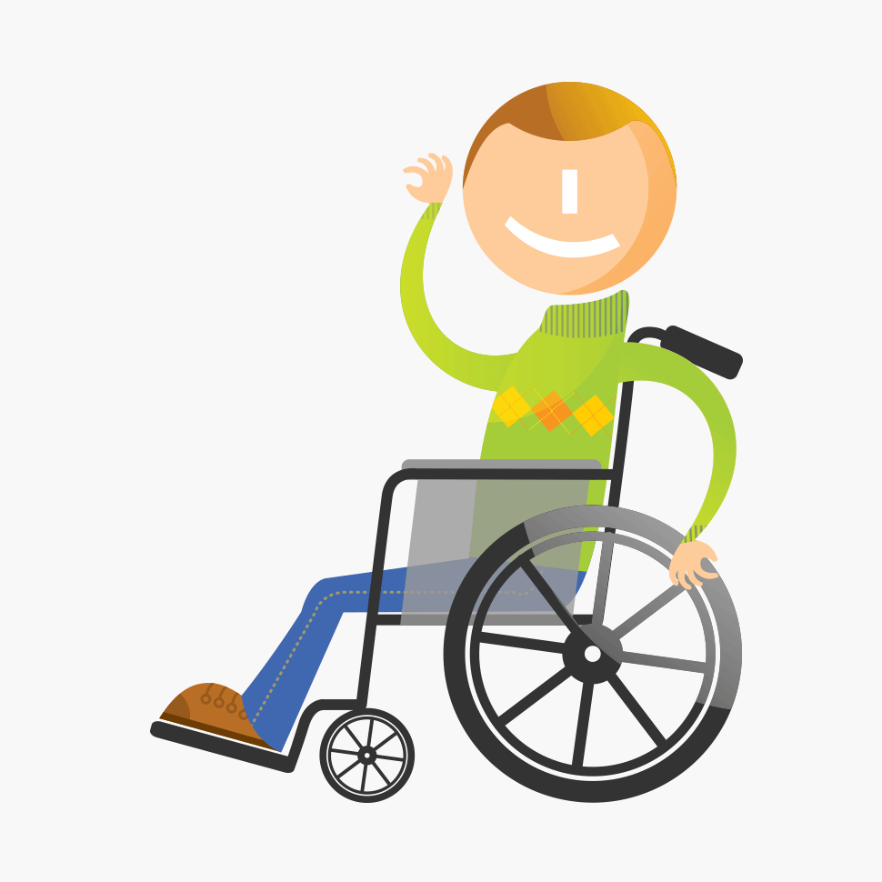